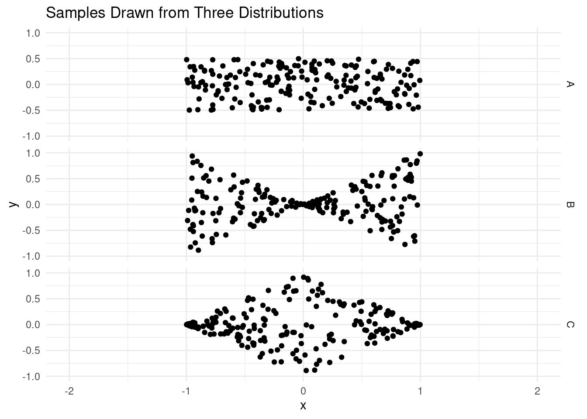
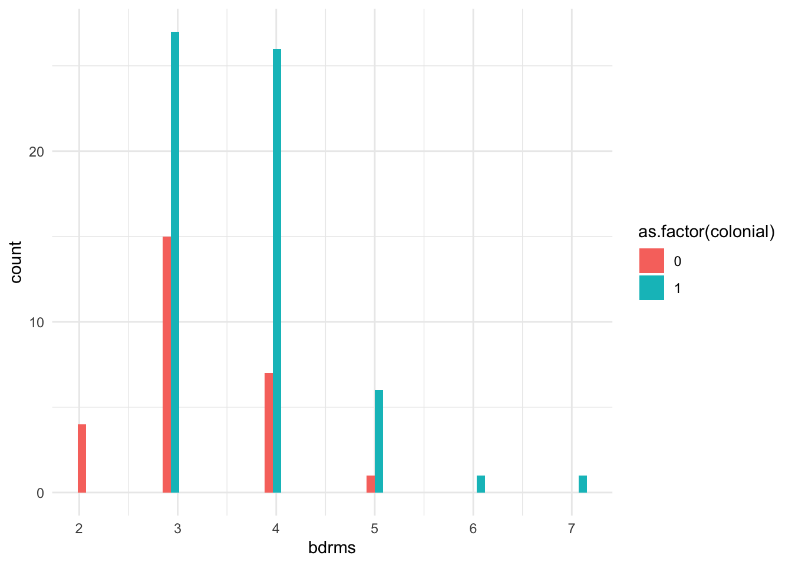
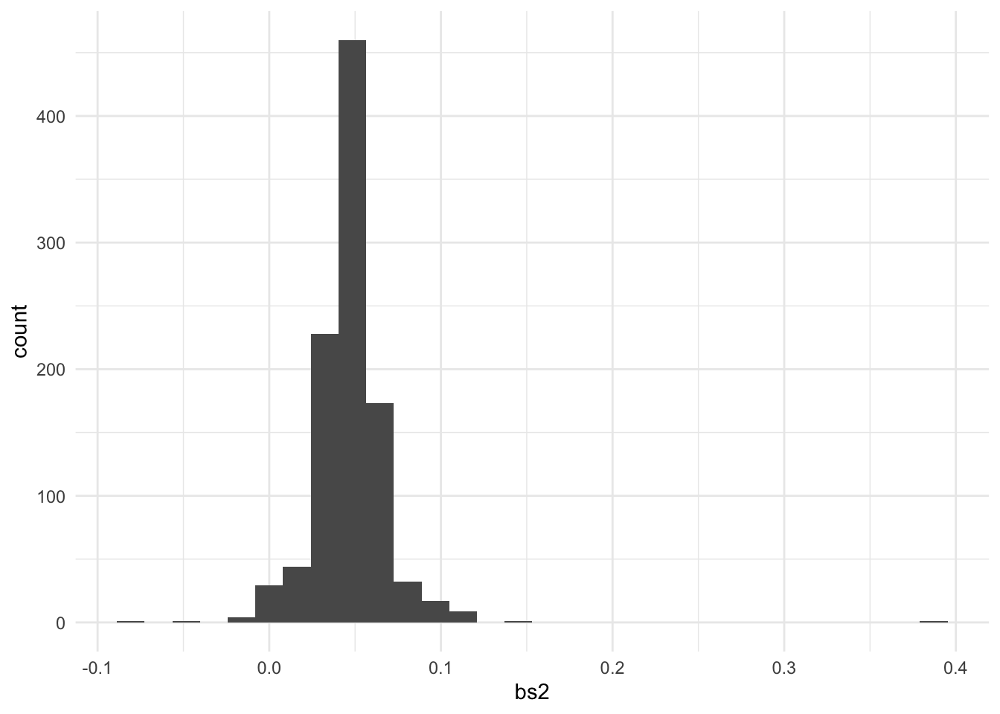

9.7 R Exercise
Real Estate in Boston
The file hprice1.RData contains 88 observations of homes in the Boston area, taken from the real estate pages of the Boston Globe during 1990. This data was provided by Wooldridge.
load('data/hprice1.RData') # provides 3 objects Last week, we fit a regression of price on square feet.
model_one <- lm(price ~ sqrft, data = data)
model_one##
## Call:
## lm(formula = price ~ sqrft, data = data)
##
## Coefficients:
## (Intercept) sqrft
## 11.2041 0.1402## any frequentist test has what components: numerator and denominator?
numerator <- 0.14
denominator <- diag(sqrt(vcovHC(model_one)))['sqrft']## Warning in sqrt(vcovHC(model_one)): NaNs producedtest_stat <- numerator / denominator
test_stat## sqrft
## 6.631694pt(test_stat, df = 87, lower.tail = FALSE) * 2## sqrft
## 2.6884e-09## we could do it by hand... or... let someone else do it for us
coeftest(model_one, vcov. = vcovHC(model_one))##
## t test of coefficients:
##
## Estimate Std. Error t value Pr(>|t|)
## (Intercept) 11.204145 39.450563 0.2840 0.7771
## sqrft 0.140211 0.021111 6.6417 2.673e-09 ***
## ---
## Signif. codes: 0 '***' 0.001 '**' 0.01 '*' 0.05 '.' 0.1 ' ' 1var(data['sqrft']) ## sqrft
## sqrft 333150.1Questions
- Estimate a new model (and save it into another object) that includes the size of the lot and whether the house is a colonial. This will estimate the model:
\[ price = \beta_{0} + \beta_{1} sqrft + \beta_{2} lotsize + \beta_{3} colonial? + e \]
- BUT BEFORE YOU DO, make a prediction: What do you think is going to happen to the coefficient that relates square footage and price?
- Will the coefficient increase, decrease, or stay the same?
- Will the uncertainty about the coefficient increase, decrease, or stay the same?
- Conduct an F-test that evaluates whether the model as a whole does better when the coefficients on
colonialandlotsizeare allowed to estimate freely, or instead are restricted to be zero (i.e. \(\beta_{2} = \beta_{3} = 0\).
- Use the function
vcovHCfrom thesandwichpackage to estimate (a) the the heteroskedastic consistent (i.e. “robust”) variance covariance matrix; and (b) the robust standard errors for the intercept and slope of this regression. Recall, what is the relationship between the VCOV and SE in a regression?
data$sqrft_two <- data$sqrft + rnorm(n=88, mean=0, sd=0.1)
data[ , c('sqrft', 'sqrft_two')]## sqrft sqrft_two
## 1 2438 2437.912
## 2 2076 2075.914
## 3 1374 1373.955
## 4 1448 1448.103
## 5 2514 2513.881
## 6 2754 2754.067
## 7 2067 2066.911
## 8 1731 1730.924
## 9 1767 1766.990
## 10 1890 1889.823
## 11 2336 2335.951
## 12 2634 2633.924
## 13 3375 3375.161
## 14 1899 1898.939
## 15 2312 2312.033
## 16 1760 1760.243
## 17 2000 1999.917
## 18 1774 1773.957
## 19 1376 1375.860
## 20 1835 1835.048
## 21 2048 2048.202
## 22 2124 2123.969
## 23 1768 1768.105
## 24 1732 1731.890
## 25 1440 1440.121
## 26 1932 1932.023
## 27 1932 1932.233
## 28 2106 2105.915
## 29 3529 3529.094
## 30 2051 2051.171
## 31 1573 1573.081
## 32 2829 2829.057
## 33 1630 1630.071
## 34 1840 1839.803
## 35 2066 2065.894
## 36 1702 1702.173
## 37 2750 2750.009
## 38 3880 3879.896
## 39 1854 1853.890
## 40 1421 1421.089
## 41 1662 1661.913
## 42 3331 3330.960
## 43 1656 1655.950
## 44 1171 1171.223
## 45 2293 2293.019
## 46 1764 1763.946
## 47 2768 2767.971
## 48 3733 3732.971
## 49 1536 1536.071
## 50 1638 1637.981
## 51 1972 1971.890
## 52 1478 1477.938
## 53 1408 1407.988
## 54 1812 1812.035
## 55 1722 1722.112
## 56 1780 1779.917
## 57 1674 1674.022
## 58 1850 1850.087
## 59 1925 1925.127
## 60 2343 2342.899
## 61 1567 1567.035
## 62 1664 1663.979
## 63 1386 1386.006
## 64 2617 2617.065
## 65 2321 2321.139
## 66 2638 2637.791
## 67 1915 1915.058
## 68 2589 2589.103
## 69 2709 2709.134
## 70 1587 1587.147
## 71 1694 1693.842
## 72 1536 1535.860
## 73 3662 3661.931
## 74 1736 1736.096
## 75 2205 2204.969
## 76 1502 1502.012
## 77 1696 1696.084
## 78 2186 2186.089
## 79 1928 1927.990
## 80 1294 1294.046
## 81 1535 1535.109
## 82 1980 1980.250
## 83 2090 2089.989
## 84 1837 1837.004
## 85 1715 1714.974
## 86 1574 1574.085
## 87 1185 1185.064
## 88 1774 1774.058model_two <- lm(price ~ sqrft + lotsize, data = data)
model_two##
## Call:
## lm(formula = price ~ sqrft + lotsize, data = data)
##
## Coefficients:
## (Intercept) sqrft lotsize
## 5.932414 0.133362 0.002113model_three <- lm(sqrft ~ lotsize, data = data)
model_three##
## Call:
## lm(formula = sqrft ~ lotsize, data = data)
##
## Coefficients:
## (Intercept) lotsize
## 1.920e+03 1.043e-02model_four <- lm(price ~ sqrft + sqrft_two, data = data)
coeftest(model_four, vcovHC)##
## t test of coefficients:
##
## Estimate Std. Error t value Pr(>|t|)
## (Intercept) 14.681 38.711 0.3793 0.7054
## sqrft 66.405 55.667 1.1929 0.2362
## sqrft_two -66.266 55.664 -1.1905 0.2372coeftest(model_three, vcovHC)##
## t test of coefficients:
##
## Estimate Std. Error t value Pr(>|t|)
## (Intercept) 1.9196e+03 4.1208e+02 4.6584 1.152e-05 ***
## lotsize 1.0430e-02 5.2537e-02 0.1985 0.8431
## ---
## Signif. codes: 0 '***' 0.001 '**' 0.01 '*' 0.05 '.' 0.1 ' ' 1data %>%
ggplot() +
aes(x=sqrft, y=lotsize) +
geom_point()
Perform a hypothesis test to check whether the population relationship between
sqrftandpriceis zero. Usecoeftest()with the robust standard errors computed above.Use the robust standard error and
qtto compute a 95% confidence interval for the coefficientsqrftin the second model that you estimated. \(price = \beta_{0} + \beta_{1} sqrft + \beta_{2} lotsize + \beta_{3} colonial\).Bootstrap. The book very quickly talks about bootstrapping which is the process of sampling with replacement and fitting a model. The idea behind the bootstrap is that since the data is generated via an iid sample from the population, that you can simulate re-running your analysis by drawing repeated samples from the data that you have.
Below is code that will conduct a boostrapping estimator of the uncertainty of the sqrft variable when lotsize and colonial are included in the model.
model_one <- lm(price ~ sqrft, data = data)
coeftest(model_one, vcovHC)##
## t test of coefficients:
##
## Estimate Std. Error t value Pr(>|t|)
## (Intercept) 11.204145 39.450563 0.2840 0.7771
## sqrft 0.140211 0.021111 6.6417 2.673e-09 ***
## ---
## Signif. codes: 0 '***' 0.001 '**' 0.01 '*' 0.05 '.' 0.1 ' ' 1coefci(model_one, level = 0.95, vcov. = vcovHC)## 2.5 % 97.5 %
## (Intercept) -67.2209785 89.6292686
## sqrft 0.0982442 0.1821778bootstrap_sqft <- function(d = data, number_of_bootstraps = 1000) {
number_of_rows <- nrow(d)
coef_sqft <- rep(NA, number_of_bootstraps)
for(i in 1:number_of_bootstraps) {
bootstrap_data <- d[sample(x=1:number_of_rows, size=number_of_rows, replace=TRUE), ]
estimated_model <- lm(price ~ sqrft, data = bootstrap_data)
coef_sqft[i] <- coef(estimated_model)['sqrft']
}
return(coef_sqft)
}bootstrap_result <- bootstrap_sqft(d = data, number_of_bootstraps = 10000)With this, it is possible to plot the distribution of these regression coefficients:
ggplot() +
aes(x = bootstrap_result) +
geom_histogram() +
labs(
x = 'Estimated Coefficient',
y = 'Count',
title = 'Bootstrap coefficients for square footage'
)## `stat_bin()` using `bins = 30`. Pick better value with `binwidth`.
Compute the standard deviation of the bootstrapped regression coefficients. How does this compare to the robust standard errors you computed above?
mean(bootstrap_result < 0.10)## [1] 0.0178data## price assess bdrms lotsize sqrft colonial lprice lassess llotsize
## 1 300.000 349.1 4 6126 2438 1 5.703783 5.855359 8.720297
## 2 370.000 351.5 3 9903 2076 1 5.913503 5.862210 9.200593
## 3 191.000 217.7 3 5200 1374 0 5.252274 5.383118 8.556414
## 4 195.000 231.8 3 4600 1448 1 5.273000 5.445875 8.433811
## 5 373.000 319.1 4 6095 2514 1 5.921578 5.765504 8.715224
## 6 466.275 414.5 5 8566 2754 1 6.144775 6.027073 9.055556
## 7 332.500 367.8 3 9000 2067 1 5.806640 5.907539 9.104980
## 8 315.000 300.2 3 6210 1731 1 5.752573 5.704449 8.733916
## 9 206.000 236.1 3 6000 1767 0 5.327876 5.464255 8.699514
## 10 240.000 256.3 3 2892 1890 0 5.480639 5.546349 7.969704
## 11 285.000 314.0 4 6000 2336 1 5.652489 5.749393 8.699514
## 12 300.000 416.5 5 7047 2634 1 5.703783 6.031887 8.860357
## 13 405.000 434.0 3 12237 3375 1 6.003887 6.073044 9.412219
## 14 212.000 279.3 3 6460 1899 0 5.356586 5.632287 8.773385
## 15 265.000 287.5 3 6519 2312 1 5.579730 5.661223 8.782476
## 16 227.400 232.9 4 3597 1760 1 5.426711 5.450609 8.187856
## 17 240.000 303.8 4 5922 2000 0 5.480639 5.716370 8.686430
## 18 285.000 305.6 3 7123 1774 1 5.652489 5.722277 8.871084
## 19 268.000 266.7 3 5642 1376 1 5.590987 5.586124 8.637994
## 20 310.000 326.0 4 8602 1835 1 5.736572 5.786897 9.059750
## 21 266.000 294.3 3 5494 2048 1 5.583496 5.684599 8.611412
## 22 270.000 318.8 3 7800 2124 1 5.598422 5.764564 8.961879
## 23 225.000 294.2 3 6003 1768 0 5.416101 5.684260 8.700015
## 24 150.000 208.0 4 5218 1732 0 5.010635 5.337538 8.559870
## 25 247.000 239.7 3 9425 1440 1 5.509388 5.479388 9.151121
## 26 275.000 294.1 3 6114 1932 0 5.616771 5.683920 8.718336
## 27 230.000 267.4 3 6710 1932 0 5.438079 5.588746 8.811355
## 28 343.000 359.9 3 8577 2106 1 5.837730 5.885826 9.056840
## 29 477.500 478.1 7 8400 3529 1 6.168564 6.169820 9.035987
## 30 350.000 355.3 4 9773 2051 1 5.857933 5.872962 9.187379
## 31 230.000 217.8 4 4806 1573 1 5.438079 5.383577 8.477620
## 32 335.000 385.0 4 15086 2829 0 5.814130 5.953243 9.621523
## 33 251.000 224.3 3 5763 1630 1 5.525453 5.412984 8.659213
## 34 235.000 251.9 4 6383 1840 1 5.459586 5.529032 8.761394
## 35 361.000 354.9 4 9000 2066 1 5.888878 5.871836 9.104980
## 36 190.000 212.5 4 3500 1702 0 5.247024 5.358942 8.160519
## 37 360.000 452.4 4 10892 2750 1 5.886104 6.114567 9.295784
## 38 575.000 518.1 5 15634 3880 1 6.354370 6.250168 9.657204
## 39 209.001 289.4 4 6400 1854 1 5.342339 5.667810 8.764053
## 40 225.000 268.1 2 8880 1421 0 5.416101 5.591360 9.091557
## 41 246.000 278.5 3 6314 1662 1 5.505332 5.629418 8.750525
## 42 713.500 655.4 5 28231 3331 1 6.570182 6.485246 10.248176
## 43 248.000 273.3 4 7050 1656 1 5.513429 5.610570 8.860783
## 44 230.000 212.1 3 5305 1171 0 5.438079 5.357058 8.576406
## 45 375.000 354.0 5 6637 2293 1 5.926926 5.869297 8.800415
## 46 265.000 252.1 3 7834 1764 1 5.579730 5.529826 8.966228
## 47 313.000 324.0 3 1000 2768 0 5.746203 5.780744 6.907755
## 48 417.500 475.5 4 8112 3733 0 6.034285 6.164367 9.001100
## 49 253.000 256.8 3 5850 1536 1 5.533390 5.548297 8.674197
## 50 315.000 279.2 4 6660 1638 1 5.752573 5.631928 8.803875
## 51 264.000 313.9 3 6637 1972 1 5.575949 5.749074 8.800415
## 52 255.000 279.8 2 15267 1478 0 5.541264 5.634075 9.633449
## 53 210.000 198.7 3 5146 1408 1 5.347107 5.291796 8.545975
## 54 180.000 221.5 3 6017 1812 1 5.192957 5.400423 8.702344
## 55 250.000 268.4 3 8410 1722 1 5.521461 5.592478 9.037177
## 56 250.000 282.3 4 5625 1780 1 5.521461 5.642970 8.634976
## 57 209.000 230.7 4 5600 1674 1 5.342334 5.441118 8.630522
## 58 258.000 287.0 4 6525 1850 1 5.552959 5.659482 8.783396
## 59 289.000 298.7 3 6060 1925 1 5.666427 5.699440 8.709465
## 60 316.000 314.6 4 5539 2343 0 5.755742 5.751302 8.619569
## 61 225.000 291.0 3 7566 1567 0 5.416101 5.673323 8.931419
## 62 266.000 286.4 4 5484 1664 1 5.583496 5.657390 8.609590
## 63 310.000 253.6 6 5348 1386 1 5.736572 5.535758 8.584478
## 64 471.250 482.0 5 15834 2617 1 6.155389 6.177944 9.669915
## 65 335.000 384.3 4 8022 2321 1 5.814130 5.951424 8.989944
## 66 495.000 543.6 4 11966 2638 1 6.204558 6.298213 9.389825
## 67 279.500 336.5 4 8460 1915 1 5.633002 5.818598 9.043104
## 68 380.000 515.1 4 15105 2589 1 5.940171 6.244361 9.622781
## 69 325.000 437.0 4 10859 2709 0 5.783825 6.079933 9.292749
## 70 220.000 263.4 3 6300 1587 1 5.393628 5.573674 8.748305
## 71 215.000 300.4 3 11554 1694 0 5.370638 5.705115 9.354787
## 72 240.000 250.7 3 6000 1536 1 5.480639 5.524257 8.699514
## 73 725.000 708.6 5 31000 3662 0 6.586172 6.563291 10.341743
## 74 230.000 276.3 3 4054 1736 1 5.438079 5.621487 8.307459
## 75 306.000 388.6 2 20700 2205 0 5.723585 5.962551 9.937889
## 76 425.000 252.5 3 5525 1502 0 6.052089 5.531411 8.617039
## 77 318.000 295.2 4 92681 1696 1 5.762052 5.687653 11.436919
## 78 330.000 359.5 3 8178 2186 1 5.799093 5.884714 9.009203
## 79 246.000 276.2 4 5944 1928 1 5.505332 5.621125 8.690138
## 80 225.000 249.8 3 18838 1294 0 5.416101 5.520660 9.843632
## 81 111.000 202.4 4 4315 1535 1 4.709530 5.310246 8.369853
## 82 268.125 254.0 3 5167 1980 1 5.591453 5.537334 8.550048
## 83 244.000 306.8 4 7893 2090 1 5.497168 5.726196 8.973732
## 84 295.000 318.3 3 6056 1837 1 5.686975 5.762994 8.708805
## 85 236.000 259.4 3 5828 1715 0 5.463832 5.558371 8.670429
## 86 202.500 258.1 3 6341 1574 0 5.310740 5.553347 8.754792
## 87 219.000 232.0 2 6362 1185 0 5.389072 5.446737 8.758098
## 88 242.000 252.0 4 4950 1774 1 5.488938 5.529429 8.507143
## lsqrft sqrft_two
## 1 7.798934 2437.912
## 2 7.638198 2075.914
## 3 7.225482 1373.955
## 4 7.277938 1448.103
## 5 7.829630 2513.881
## 6 7.920810 2754.067
## 7 7.633853 2066.911
## 8 7.456455 1730.924
## 9 7.477038 1766.990
## 10 7.544332 1889.823
## 11 7.756196 2335.951
## 12 7.876259 2633.924
## 13 8.124150 3375.161
## 14 7.549083 1898.939
## 15 7.745868 2312.033
## 16 7.473069 1760.243
## 17 7.600903 1999.917
## 18 7.480992 1773.957
## 19 7.226936 1375.860
## 20 7.514800 1835.048
## 21 7.624619 2048.202
## 22 7.661057 2123.969
## 23 7.477604 1768.105
## 24 7.457032 1731.890
## 25 7.272398 1440.121
## 26 7.566311 1932.023
## 27 7.566311 1932.233
## 28 7.652546 2105.915
## 29 8.168770 3529.094
## 30 7.626083 2051.171
## 31 7.360740 1573.081
## 32 7.947679 2829.057
## 33 7.396335 1630.071
## 34 7.517521 1839.803
## 35 7.633369 2065.894
## 36 7.439559 1702.173
## 37 7.919356 2750.009
## 38 8.263591 3879.896
## 39 7.525101 1853.890
## 40 7.259116 1421.089
## 41 7.415777 1661.913
## 42 8.111028 3330.960
## 43 7.412160 1655.950
## 44 7.065613 1171.223
## 45 7.737616 2293.019
## 46 7.475339 1763.946
## 47 7.925880 2767.971
## 48 8.224967 3732.971
## 49 7.336937 1536.071
## 50 7.401231 1637.981
## 51 7.586803 1971.890
## 52 7.298445 1477.938
## 53 7.249926 1407.988
## 54 7.502186 1812.035
## 55 7.451241 1722.112
## 56 7.484369 1779.917
## 57 7.422971 1674.022
## 58 7.522941 1850.087
## 59 7.562681 1925.127
## 60 7.759187 2342.899
## 61 7.356918 1567.035
## 62 7.416980 1663.979
## 63 7.234177 1386.006
## 64 7.869784 2617.065
## 65 7.749753 2321.139
## 66 7.877776 2637.791
## 67 7.557473 1915.058
## 68 7.859027 2589.103
## 69 7.904335 2709.134
## 70 7.369601 1587.147
## 71 7.434848 1693.842
## 72 7.336937 1535.860
## 73 8.205765 3661.931
## 74 7.459339 1736.096
## 75 7.698483 2204.969
## 76 7.314553 1502.012
## 77 7.436028 1696.084
## 78 7.689829 2186.089
## 79 7.564239 1927.990
## 80 7.165493 1294.046
## 81 7.336286 1535.109
## 82 7.590852 1980.250
## 83 7.644919 2089.989
## 84 7.515889 1837.004
## 85 7.447168 1714.974
## 86 7.361375 1574.085
## 87 7.077498 1185.064
## 88 7.480992 1774.058wilcox.test(bdrms ~ colonial, data = data)##
## Wilcoxon rank sum test with continuity correction
##
## data: bdrms by colonial
## W = 538.5, p-value = 0.004926
## alternative hypothesis: true location shift is not equal to 0t.test(bdrms ~ colonial, data = data)##
## Welch Two Sample t-test
##
## data: bdrms by colonial
## t = -3.1146, df = 56.164, p-value = 0.002899
## alternative hypothesis: true difference in means between group 0 and group 1 is not equal to 0
## 95 percent confidence interval:
## -0.9078686 -0.1971709
## sample estimates:
## mean in group 0 mean in group 1
## 3.185185 3.737705data %>%
ggplot() +
aes(x=bdrms, fill = as.factor(colonial)) +
geom_histogram(position = 'dodge')## `stat_bin()` using `bins = 30`. Pick better value with `binwidth`.
data_adam <- data[sample(1:88, size=10), ]
lm(price ~ sqrft, data = data_adam)##
## Call:
## lm(formula = price ~ sqrft, data = data_adam)
##
## Coefficients:
## (Intercept) sqrft
## 178.07350 0.04682bs2 <- bootstrap_sqft(d = data_adam, 1000)
ggplot() +
aes(x=bs2) +
geom_histogram()## `stat_bin()` using `bins = 30`. Pick better value with `binwidth`.
data_adam## price assess bdrms lotsize sqrft colonial lprice lassess llotsize
## 87 219.0 232.0 2 6362 1185 0 5.389072 5.446737 8.758098
## 26 275.0 294.1 3 6114 1932 0 5.616771 5.683920 8.718336
## 8 315.0 300.2 3 6210 1731 1 5.752573 5.704449 8.733916
## 12 300.0 416.5 5 7047 2634 1 5.703783 6.031887 8.860357
## 55 250.0 268.4 3 8410 1722 1 5.521461 5.592478 9.037177
## 46 265.0 252.1 3 7834 1764 1 5.579730 5.529826 8.966228
## 61 225.0 291.0 3 7566 1567 0 5.416101 5.673323 8.931419
## 21 266.0 294.3 3 5494 2048 1 5.583496 5.684599 8.611412
## 16 227.4 232.9 4 3597 1760 1 5.426711 5.450609 8.187856
## 19 268.0 266.7 3 5642 1376 1 5.590987 5.586124 8.637994
## lsqrft sqrft_two
## 87 7.077498 1185.064
## 26 7.566311 1932.023
## 8 7.456455 1730.924
## 12 7.876259 2633.924
## 55 7.451241 1722.112
## 46 7.475339 1763.946
## 61 7.356918 1567.035
## 21 7.624619 2048.202
## 16 7.473069 1760.243
## 19 7.226936 1375.860